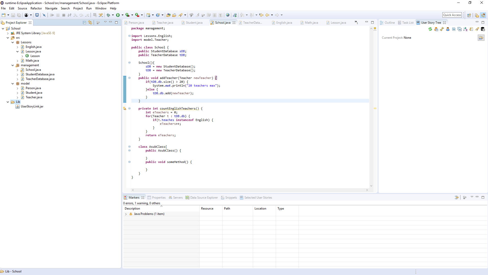
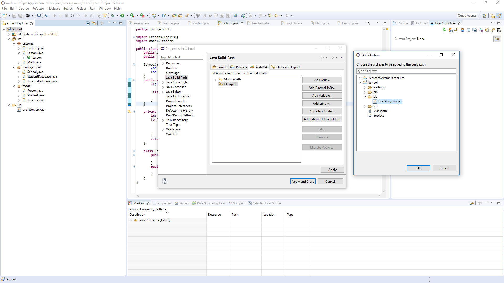
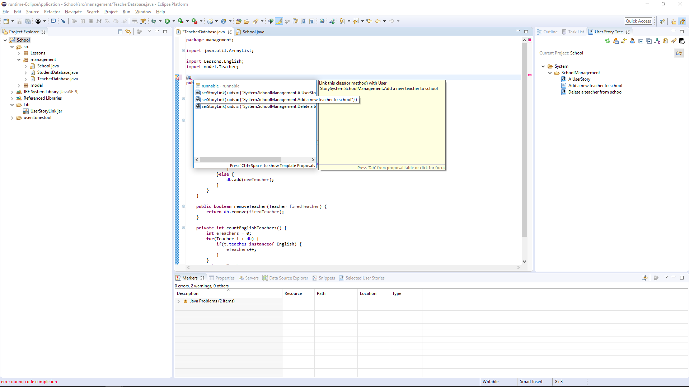
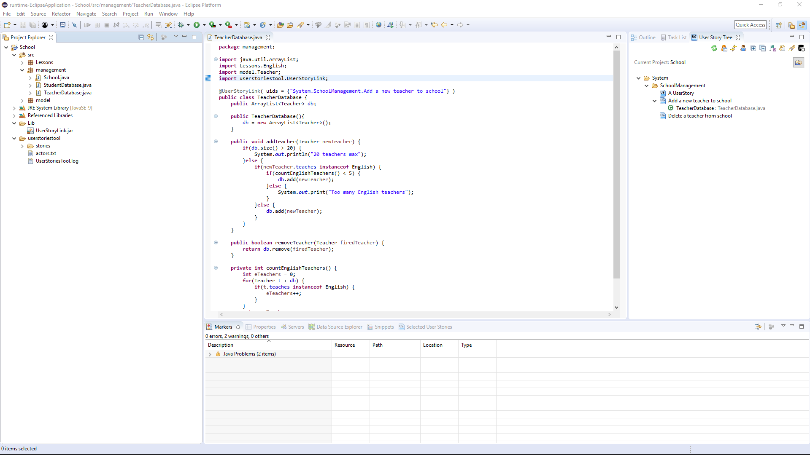
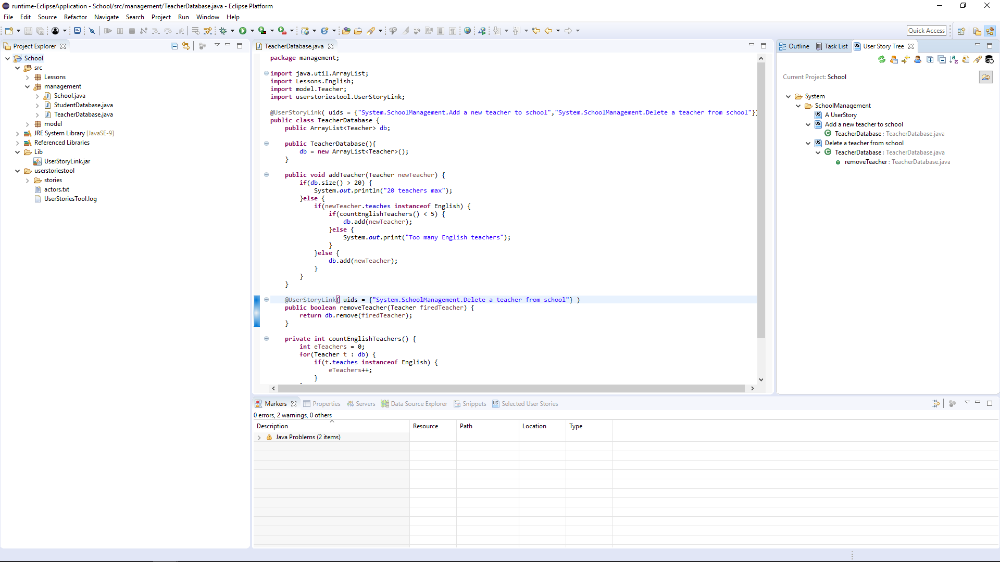
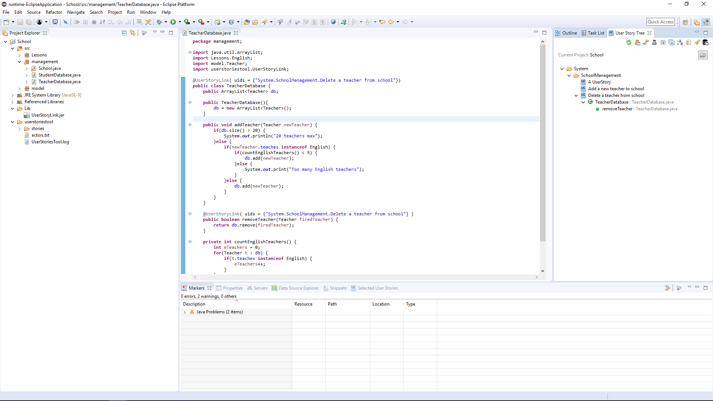
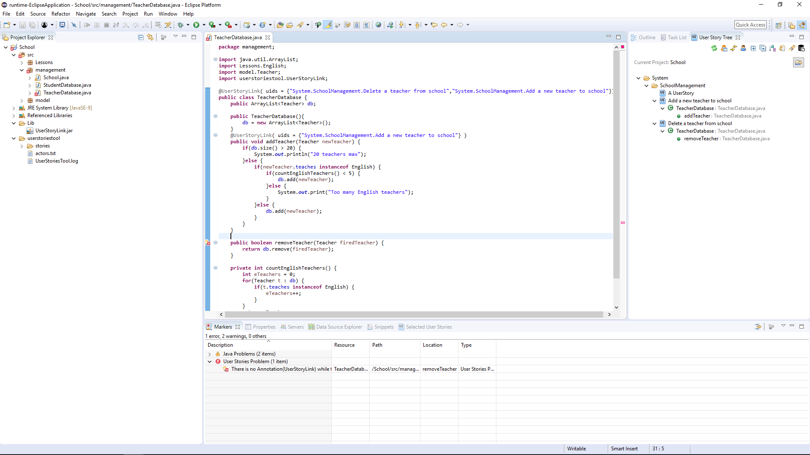
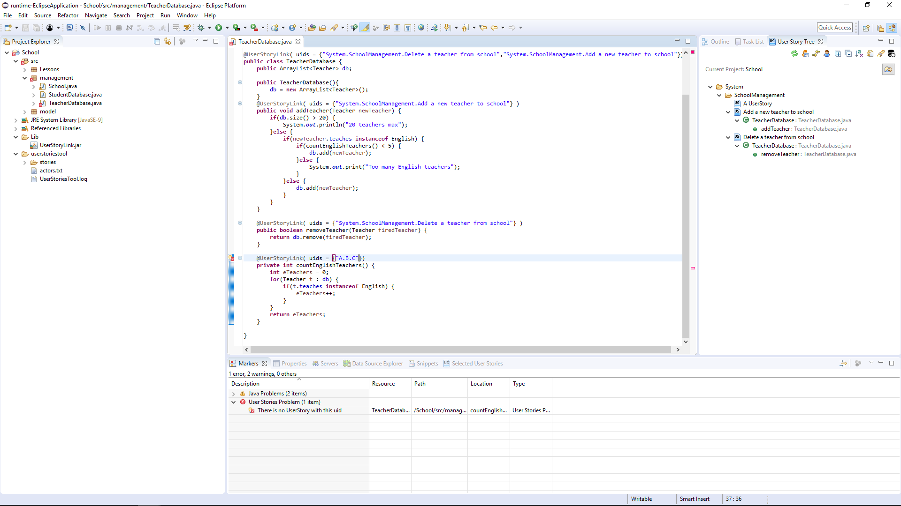
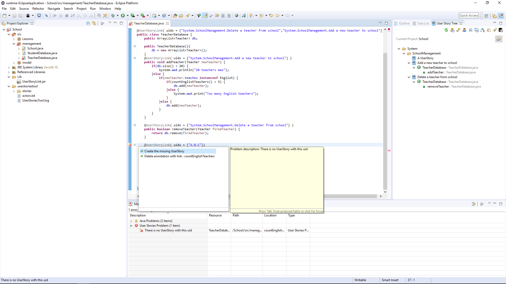
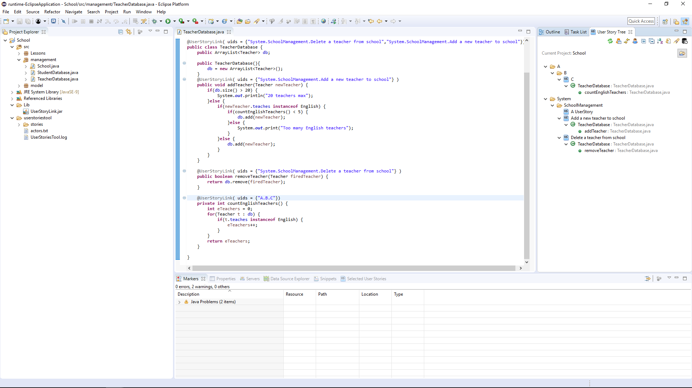

UserStories Annotation Tutorial
Installing Jar
You need to install the jar with the annotation...
First create a folder in the project and place the
UserStoryLink.jar .
The Project Explorer should look like this.

Then right click on the project and select build-path.
Select Libraries->Classpath(depending on the eclipse version)->Add Jars
and then select the UserStoryLink.jar

Create Annotation
To create a link between a UserStory and a java element (Method,Class or Constructor)
just add the Annotation (@UserStoryLink) above the java element
and press control + space (show content assist) and select a UserStory.

After saving the file the tool will create the link.
As you can see bellow the annotation contains an array with the uids of the UserStories
Example of a UserStory's uid : System.SubSystem.SubSystem.UserStory

Adding an anotation to a method will create the Annotation to the class automatically.

Remove Annotation
To remove a link just delete the link from the tree.
The corresponding annotation will be removed too.
In the next example the link to the UserStory(Add a new teacher to school) will be deleted
and the the uid will be removed from the class(TeacherDatabase)

Error Handler
The ErrorHandler will create a marker on the file in case of an error.
There will be quickfixes for the 2 types of error that exists.
The first type of error is missing Annotations.
If there is a link on the tree but the files doesn't have the appropriate annotation
the ErrorHandler will create a marker with 2 quickfixes.
The quickfixes will either add the Annotation to the java element or delete the
Link in the tree.
REMEMBER for the changes to be applied on tree... the files must be saved.

The second type of error is a missmatching in the uids.
The Annotation must contain the right uid. In the example bellow the
the uid, of the countEnglishTeachers method, doesn't exist in the tree.

The 2 available quickfixes wil either remove the annotation or
create the missing UserStory.
If the "Creating missing UserStory" action is selected every missing System, SubSystem and UserStory
will be created. In this way the tool gives the option to the programmers to create Systems, SubSystems and
UserStories without cutting their pace.

And the result will be.

UserStoriesTool(java 1.7 and later)
Tested on eclipse Mars and Oxygen
you can download the project from
here(not working)